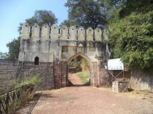

Manikgarh Fort
Mankyal Fort
Manikgarh, also known as Gadchandur is an ancient fort in Chandrapur district, Maharashtra. It is a hill fort 507 meters above sea level. The fort is in ruins and is frequented by wild animals that live in the vicinity, such as panthers and boars. Several monuments of historical importance are nearby. It was under the rule of Gonds of Chanda from the 9-16th century.
History

Built by Gahilu, the last Mana Naga king, the fort was originally known as Manikgarh, named after Manikadevi, the patron deity of the Mana Nagas. Historical evidence, including a Naga carving at the entrance, highlights its connection to the Mana Naga dynasty.
Later, the fort came under the rule of the Gond rulers of Chanda, whose kingdom extended from Nagpur in the north to the Godavari region in the south. The Gonds ruled the area for several centuries before eventually surrendering to the Marathas in 1751.
Today, although the fort lies in ruins, it remains a popular destination for history enthusiasts, trekkers, and nature lovers. Surrounded by forests and wildlife, Manikgarh Fort provides visitors with a unique blend of historical significance, natural beauty, and adventure. Several other historical monuments and cultural sites can also be explored in the surrounding area.